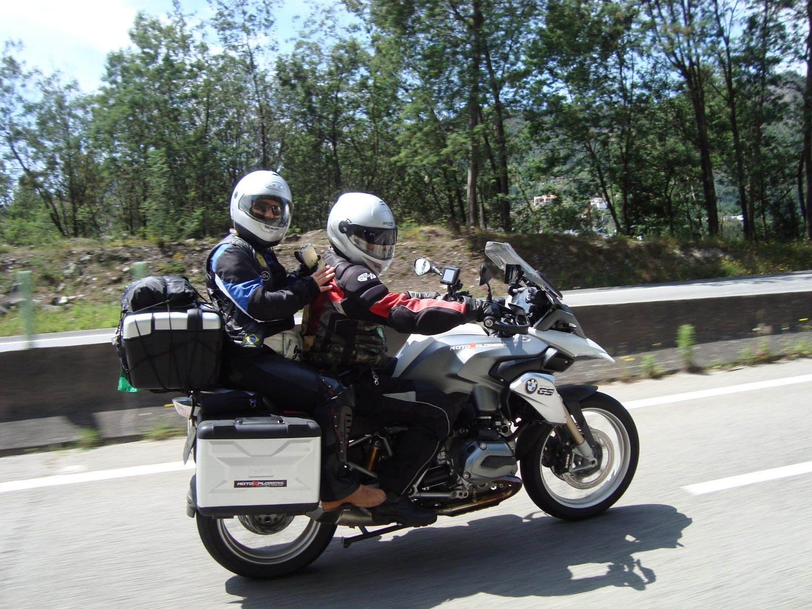
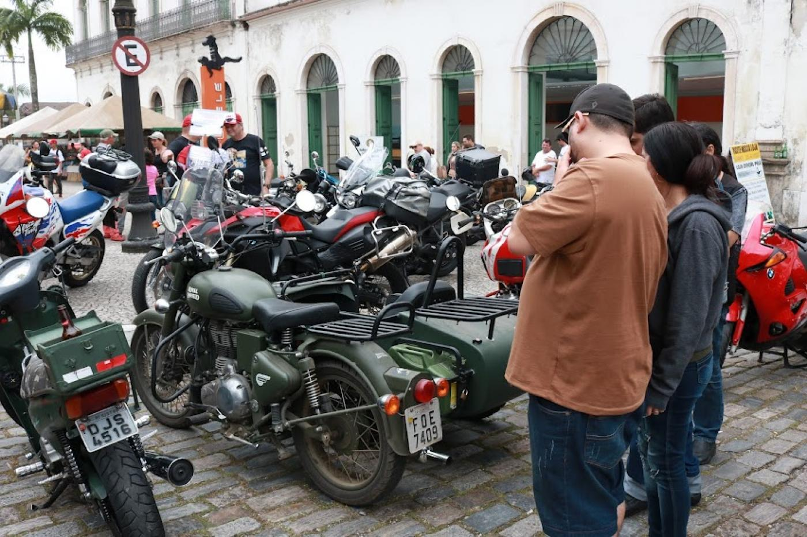

Review da Semana
Confira nossa análise detalhada do mais recente lançamento da marca Honda. Descubra todos os detalhes sobre desempenho, design e tecnologia que fazem desta moto uma verdadeira máquina dos sonhos.
Seja bem-vindo ao nosso blog dedicado a todos os entusiastas de motocicletas. Aqui você encontrará uma variedade de conteúdos emocionantes sobre o mundo das duas rodas, desde análises detalhadas de modelos icônicos até dicas de manutenção e aventuras incríveis relatadas por nossos colaboradores e leitores. Explore nossos posts para descobrir as últimas novidades do mundo das motos, informações sobre eventos e passeios, avaliações de equipamentos e muito mais. Quer você seja um novato curioso ou um veterano experiente, há sempre algo interessante esperando por você aqui no nosso blog. Então, pegue sua jaqueta, ajuste seu capacete e embarque nessa jornada conosco enquanto exploramos o emocionante universo das motocicletas juntos!

Novos Lançamentos de 2024
Confira nossa análise detalhada do mais recente lançamento da marca Honda. Descubra todos os detalhes sobre desempenho, design e tecnologia que fazem desta moto uma verdadeira máquina dos sonhos.
Prepare-se para a estrada com nossas dicas essenciais para viagens de moto. De rotas pitorescas a itens de bagagem indispensáveis, temos tudo o que você precisa para uma aventura inesquecível sobre duas rodas.
Conheça a história por trás do piloto profissional e suas incríveis experiências nas corridas de motocicletas. Descubra seus segredos de sucesso e sua paixão pela velocidade.
Profundamente enraizada na cultura popular, a história das motocicletas é fascinante e multifacetada. Explore conosco os momentos marcantes, as lendas do passado e a evolução do design ao longo dos anos.
Descubra o mundo da customização de motos e inspire-se com projetos únicos e inovadores. De bobbers a cafe racers, há infinitas possibilidades para expressar sua personalidade sobre duas rodas.
Nada é mais importante do que a sua segurança ao pilotar uma moto. Aprenda sobre as melhores práticas de segurança, equipamentos de proteção essenciais e técnicas de pilotagem defensiva para garantir viagens seguras e divertidas.
Envie suas melhores fotos de moto para nosso concurso mensal e tenha a chance de ser destaque em nosso blog e nas redes sociais. Compartilhe suas aventuras e inspire outros entusiastas com suas imagens impressionantes.

O melhor casal do blog ❤
Junte-se à nossa comunidade online de apaixonados por motos para discutir tudo, desde modelos clássicos até as últimas inovações tecnológicas. Troque dicas, compartilhe histórias e faça novas amizades com outros amantes das duas rodas.
Fique por dentro dos eventos e encontros de motociclistas em sua região. De passeios beneficentes a encontros de clubes, há sempre algo acontecendo para os fãs de motos se reunirem e celebrarem sua paixão em comum.

Nosso último encontro no Centro Histórico de Santos!❤